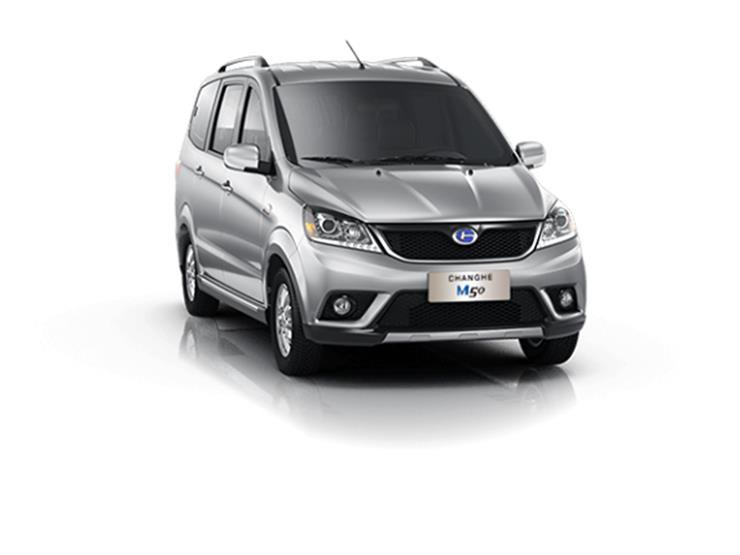
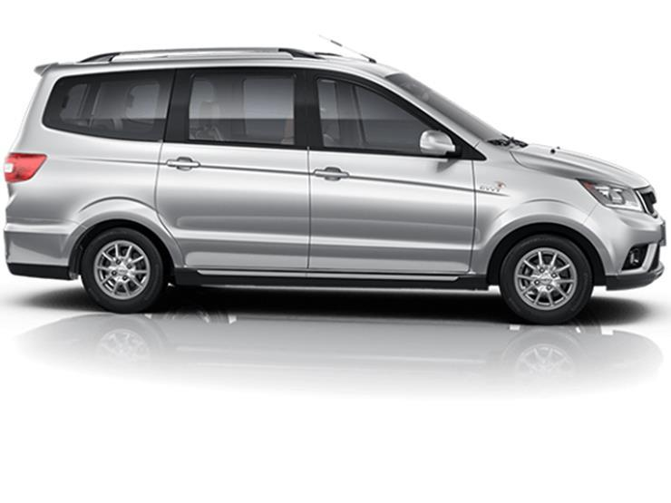
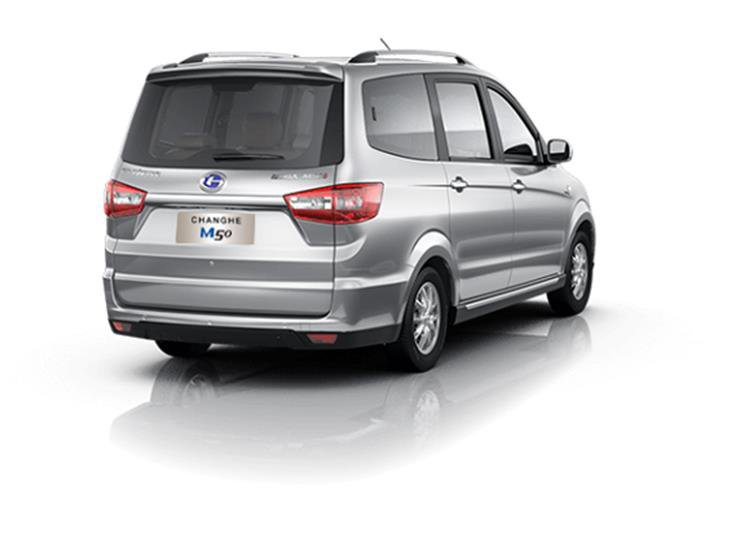
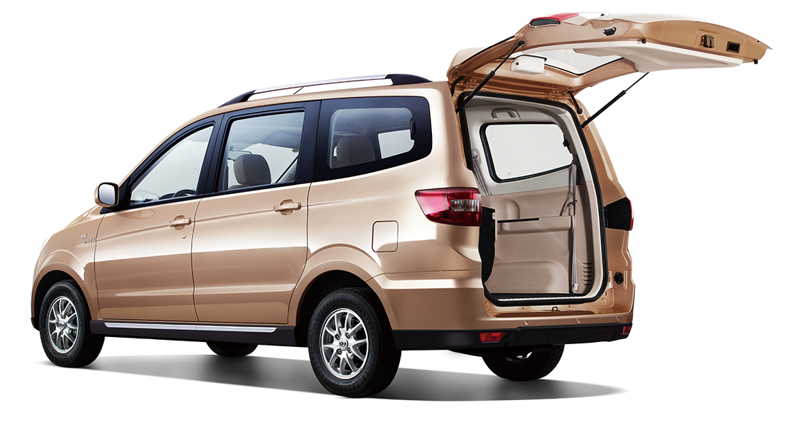

Changi M50
The "Changi M50" model 2020 belongs to the category of multi-purpose vehicles " MPV ". It is equipped with a four-cylinder engine, with a capacity of 1500 cc, producing a power of 116 "horsepower" and a maximum torque of 144 Newton / meter, connected to a five-speed transmission "Manual".



The average fuel consumption of the car is about 6.8 liters, when covering distances of up to 100 km.
External dimensions
- Length(4525 mm)
- Display(1700 mm)
- Height(1783 mm)

"Changi M50" cars were provided with a set of standard specifications and accessories, including "15-inch rims, front and rear dual-air conditioner, front and rear electric windows, rear windshields."
It contained a number of basic accessories, including "Power Steering, a remote key, a central lock, a radio with a USB port, a rear spoiler, and others."